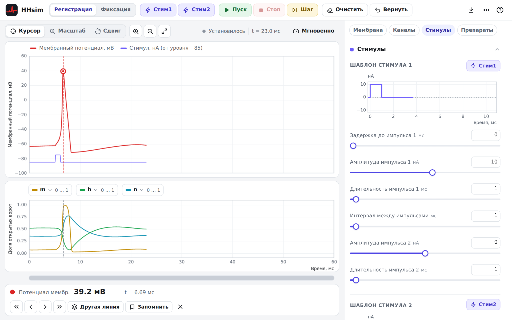
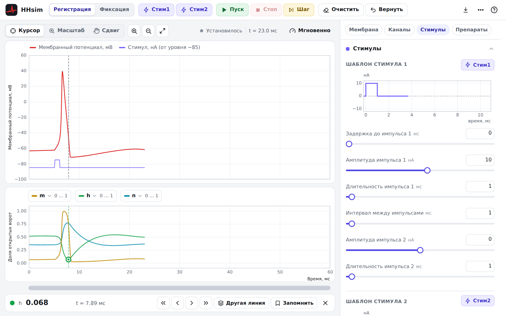
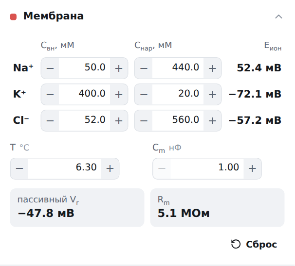
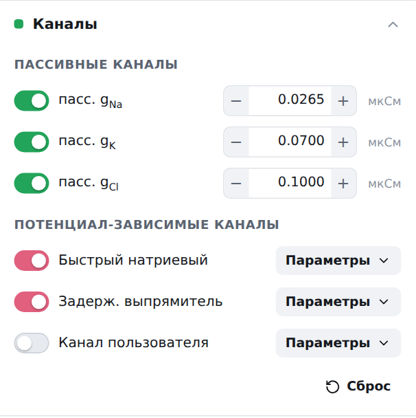
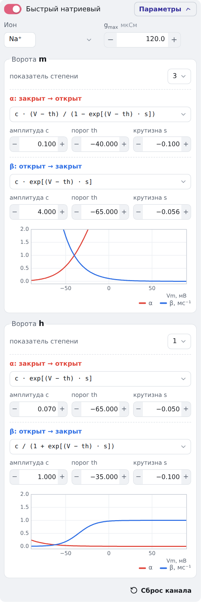
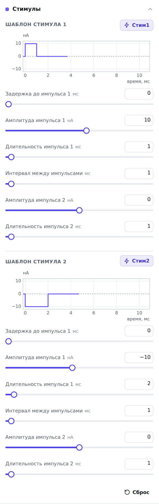
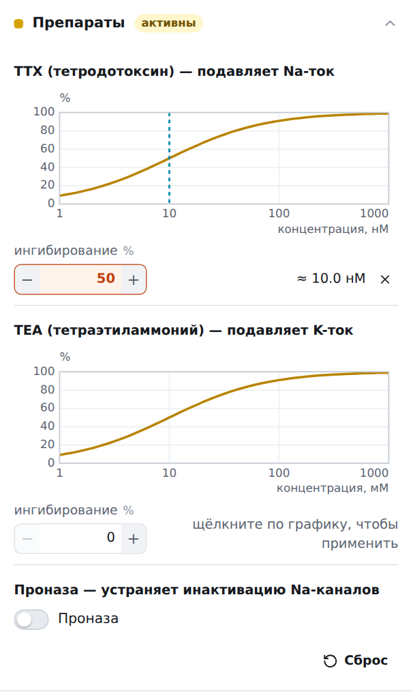
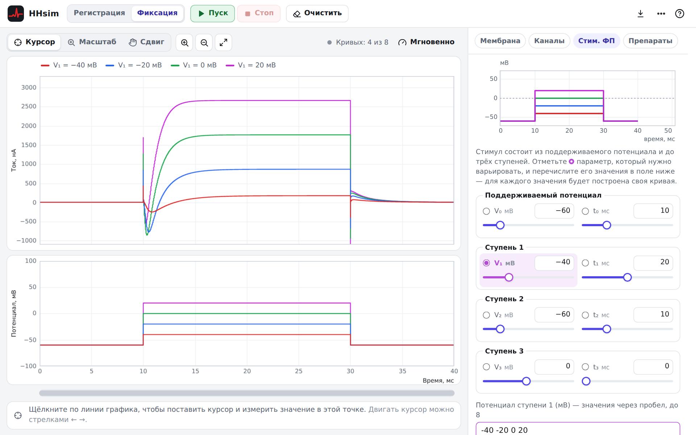
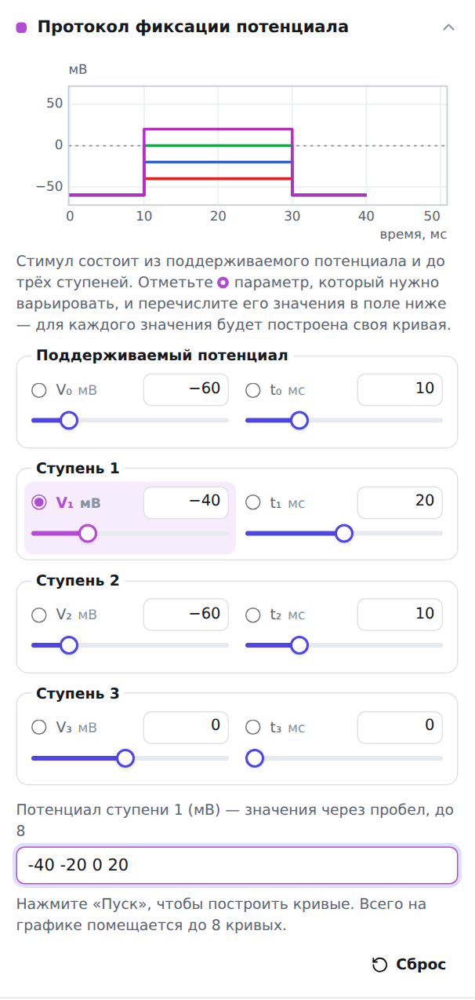

Руководство по работе с HHsim
HHsim — графическая модель участка возбудимой мембраны нейрона, основанная на уравнениях Ходжкина–Хаксли. Программа даёт полный доступ к параметрам Ходжкина–Хаксли, параметрам мембраны, параметрам стимула и концентрациям ионов и подходит для самых разных упражнений. Симулятор работает прямо в браузере — на компьютере, планшете и телефоне; ничего устанавливать не нужно.
- Главное окно
- Запуск и остановка моделирования
- Курсор
- Панель «Мембрана»
- Панель «Каналы»
- Панель «Стимулы»
- Панель «Препараты»
- Режим фиксации потенциала
- Экспорт данных и печать
- Клавиши
- Отличия от исходной программы
- О программе
Главное окно

Главное окно содержит два графика. На большом верхнем графике красным цветом показан мембранный потенциал, а фиолетовым — внешние стимулы (импульсы тока). Линия стимула рисуется на шкале потенциала: её нулевой уровень находится на отметке −85, и 1 нА соответствует одному делению в 1 мВ.
На нижнем графике показаны три величины — жёлтой, зелёной и голубой линиями. По умолчанию это переменные Ходжкина–Хаксли m, h и n, но в цветных списках над графиком можно выбрать и другие величины: токи и проводимости каналов, ток утечки, переменные ворот канала пользователя. Пункт «пусто» скрывает линию. Рядом с каждым списком указан диапазон шкалы этой величины: нижний край графика соответствует минимуму, верхний — максимуму. Если у всех выбранных величин одинаковая шкала, деления оси подписаны в её единицах; иначе подписи — «мин» и «макс».
Над графиками — переключатель режима мыши: Курсор, Масштаб и Сдвиг.
- В режиме Курсор щелчок по любой линии ставит курсор, а значение выбранной переменной появляется на панели курсора под графиками (см. Курсор). При наведении мыши рядом с указателем показываются значения всех линий в этот момент времени.
- В режиме Масштаб щелчок увеличивает график вокруг выбранной точки, а щелчок с нажатой клавишей Shift или правой кнопкой мыши — уменьшает. Если нажать кнопку мыши и протянуть указатель, появится рамка, позволяющая точнее выбрать увеличиваемую область. Двойной щелчок возвращает исходный вид.
- В режиме Сдвиг можно, нажав кнопку мыши и протянув указатель, сдвигать график вдоль любой оси.
В любом режиме колесо мыши (или жест щипка на тачпаде) меняет масштаб по времени, колесо с клавишей Shift сдвигает график по времени, а с клавишей Alt — меняет масштаб по вертикали. Кнопки с лупами увеличивают и уменьшают масштаб по времени, кнопка со стрелками возвращает исходный вид. Под графиками находится полоса прокрутки: перетащите её ползунок, чтобы посмотреть более ранние участки записи. Оба графика всегда показывают один и тот же отрезок времени.
Кнопки Мембрана, Каналы, Стимулы и Препараты над панелью справа показывают и скрывают панели параметров модели (панели можно также сворачивать, щёлкнув по их заголовку). В свёрнутом виде заголовок панели показывает краткую сводку, например текущий потенциал покоя. Пока применяется какой-либо препарат, кнопка «Препараты» окрашена в жёлтый цвет. Ширину правой панели можно менять, перетаскивая её левый край.
Поля, значения которых отличаются от исходных, выделяются цветом. Число можно ввести с клавиатуры (подтвердите клавишей Enter) или изменить кнопками − и +, а также стрелками ↑ и ↓. Значения за пределами допустимого диапазона автоматически ограничиваются; диапазон и исходное значение показываются во всплывающей подсказке.
Кнопка ⋯ в правом верхнем углу позволяет выбрать светлую или тёмную тему и вернуть все параметры к исходным значениям (пункт «Начать заново» — то же самое, что перезапуск программы).
Запуск и остановка моделирования
Нажмите фиолетовую кнопку Стим1 или Стим2, чтобы подать деполяризующий или гиперполяризующий импульс тока. Моделирование запускается всякий раз, когда подаётся стимул или изменяется значение параметра. Оно останавливается, когда мембранный потенциал, по всей видимости, достиг асимптоты (за последние 5 мс изменился меньше чем на 1 мВ).
- Если моделирование остановилось слишком рано, нажмите жёлтую кнопку Шаг, чтобы продвинуть его ещё на несколько шагов по времени (не меньше чем на 2 мс).
- Зелёная кнопка Пуск включает непрерывное моделирование, красная кнопка Стоп — останавливает его.
- Кнопка Очистить очищает графики и сбрасывает время, но не затрагивает остальные параметры модели.
- Кнопка Вернуть возвращает переменные Ходжкина–Хаксли к ранее сохранённому состоянию. Изначально это состояние в начале записи (состояние покоя); как сохранить другое состояние, описано в разделе Курсор.
Кнопка скорости над графиками (по умолчанию «Нормально») задаёт скорость анимации — сколько модельного времени рисуется за секунду. В режиме «Мгновенно» результат появляется сразу. Скорость анимации не влияет на результаты расчёта.
Курсор
Курсор позволяет измерить значение любой величины, выведенной на график, и найти максимумы и минимумы. Щелчок по любой линии графика ставит курсор в эту точку. Курсор отображается кружком того же цвета, что и линия измеряемой переменной, а вертикальная пунктирная линия отмечает этот момент времени на обоих графиках. Панель курсора под графиками показывает название величины, её значение и время от начала моделирования.

Перемещение курсора
Курсор можно переместить в новую точку, щёлкнув по ней. Чтобы убрать курсор, щёлкните по пустому месту графика (там, где нет линии), нажмите кнопку × на панели курсора или клавишу Esc.
Кнопки ‹ и › на панели курсора сдвигают курсор на одну точку по времени влево или вправо, а кнопки « и » перемещают его к ближайшему локальному максимуму или минимуму. То же самое делают клавиши ← → и Shift + ← →. Если курсор уходит за край графика, график прокручивается.
Например, пусть нужно найти момент наибольшего закрытия инактивационных ворот натриевого канала (h) после спайка. Щёлкните по зелёной линии чуть позже спайка, а затем нажмите » (или «): курсор перейдёт к ближайшему экстремуму, и на панели курсора появится минимальное значение h и время, когда оно достигается.
Кнопка Другая линия (в исходной программе — «пер.», var) переводит курсор с одной линии графика на другую, чтобы измерить другую величину в тот же момент времени (клавиши ↑ ↓). Например, чтобы узнать значение переменной n на пике спайка, поставьте курсор на красную линию, кнопкой « или » найдите пик, а затем нажимайте «Другая линия», пока курсор не окажется на голубой линии (n).
Кнопка Запомнить на панели курсора сохраняет значения переменных Ходжкина–Хаксли в текущей позиции курсора. Позже можно вернуть модель к этим значениям кнопкой Вернуть. Это удобно, чтобы после каждой из серии манипуляций возвращать систему в известное состояние покоя и корректно сравнивать результаты.
Панель «Мембрана»

Панель «Мембрана» позволяет изменять внутренние (Cвн) и внешние (Cнар) концентрации ионов натрия, калия и хлора, температуру T и ёмкость мембраны Cm. Для каждого иона показан равновесный (нернстовский) потенциал Eион. Ниже показаны потенциал покоя мембраны с одними только пассивными каналами (пассивный Vr) и входное сопротивление пассивной мембраны Rm. Температура влияет и на равновесные потенциалы, и на скорости переходов всех ворот (множитель 3(T − 6,3)/10). Кнопка Сброс возвращает исходные значения.
Панель «Каналы»

Панель «Каналы» даёт доступ к параметрам каждого типа активных и пассивных каналов. Канал можно временно отключить переключателем слева от названия: зелёные переключатели относятся к пассивным каналам, розовые — к потенциал-зависимым. Для пассивных каналов единственный параметр — проводимость в микросименсах (мкСм).
Для активных каналов — быстрого натриевого канала, калиевого канала задержанного выпрямления («Задерж. выпрямитель») и канала, задаваемого пользователем, — кнопка Параметры раскрывает параметры Ходжкина–Хаксли этого канала: ион, для которого проницаем канал, максимальную проводимость gmax и параметры ворот. Проводимость канала равна gmax·xa·yb, где x и y — переменные двух ворот (для натриевого канала — m и h), а показатели степени a и b задаются для каждых ворот. Каждые ворота описываются скоростями α (переход «закрыт → открыт») и β («открыт → закрыт»); для каждой скорости выбирается вид функции и три параметра — амплитуда c, порог th и крутизна s. График под параметрами показывает α (красным) и β (синим) в зависимости от мембранного потенциала.

Канал пользователя по умолчанию выключен и не имеет параметров. Его параметры можно ввести вручную или скопировать из натриевого либо калиевого канала (список «Копировать параметры из»), а затем включить канал переключателем. Кнопка Сброс канала возвращает исходные параметры канала, а кнопка Сброс внизу панели — исходные проводимости пассивных каналов и исходное состояние переключателей.
Панель «Стимулы»

Панель «Стимулы» задаёт параметры двух внешних стимулов, Стим1 и Стим2, каждый из которых представляет собой либо одиночный импульс тока, либо последовательность из двух независимо настраиваемых импульсов: задержка до первого импульса, амплитуда и длительность первого импульса, интервал между импульсами, амплитуда и длительность второго. Ползунки меняют значения на целые числа, а в поле рядом с ползунком можно ввести и дробное значение, например 0.9. График показывает форму стимула. Стимул подаётся кнопкой Стим1 или Стим2 — в верхней панели или прямо на этой панели.
Панель «Препараты»

Панель «Препараты» позволяет применить любой из трёх препаратов: TTX (тетродотоксин), который подавляет натриевый ток; TEA (тетраэтиламмоний), который подавляет калиевый ток; и проназу, которая устраняет инактивацию натриевых каналов. Для TTX и TEA показана кривая доза–эффект (IC50 = 10 нМ и 10 мМ соответственно): щёлкните по графику, чтобы применить препарат в выбранной концентрации, или введите процент ингибирования в поле под графиком. Щелчок вне кривой или кнопка × отменяет препарат.
Режим фиксации потенциала
HHsim запускается в режиме регистрации потенциала (current clamp). Чтобы перейти в режим фиксации потенциала (voltage clamp), выберите «Фиксация потенциала» в переключателе режима в верхней панели. Вместо панели «Стимулы» появится панель протокола фиксации потенциала («Стим. ФП»; в исходной программе — VStim).

На нижнем графике показан заданный (фиксированный) потенциал, а на верхнем — ток мембраны, возникающий в ответ. Построение запускается зелёной кнопкой Пуск.
Протокол

Протокол состоит из исходного (поддерживаемого) потенциала V0 и времени его удержания t0, за которыми следуют до трёх «ступеней», каждая из которых задаётся потенциалом Vi и длительностью ti. Таким образом, всего имеется восемь параметров; все они настраиваются ползунками и полями ввода. Ступень с нулевой длительностью пропускается.
Один из параметров можно систематически варьировать, оставляя остальные неизменными. Варьируемый параметр отмечен фиолетовым переключателем; по умолчанию это потенциал ступени 1. Поле ввода в нижней части панели содержит набор значений этого параметра, разделённых пробелами. Например, три кривые можно задать, введя «-40 -25 -10» (без кавычек). График протокола показывает форму потенциала для каждой кривой.
При нажатии Пуск HHsim по очереди проводит моделирование для каждой кривой. Перед каждой кривой модель приводится в равновесие при поддерживаемом потенциале. Если снова нажать «Пуск», будут построены новые кривые другого цвета поверх первых; чтобы этого избежать, нажмите Очистить. Всего на графике помещается восемь кривых; отдельную кривую можно удалить, поставив на неё курсор и нажав Удалить кривую.
Если нужно варьировать сразу несколько параметров стимула, например одновременно потенциал и длительность ступени 1, это можно сделать вручную: настройте первую кривую, нажмите «Пуск», затем настройте следующую кривую, снова нажмите «Пуск» и так далее. Не нажимая «Очистить», можно также сравнить действие стимулов в присутствии и в отсутствие препарата: постройте семейство кривых, примените препарат в панели «Препараты» и снова нажмите «Пуск».
На панели курсора в этом режиме ток показывается с подходящей приставкой единиц (нА, мкА, мА). При возврате в режим регистрации модель возвращается в состояние, в котором она была до перехода в режим фиксации (в точке курсора, если он был установлен, иначе — в начале записи).
Экспорт данных и печать
Кнопка Экспорт в верхней панели открывает меню:
- Данные — CSV сохраняет построенные кривые в виде таблицы (разделитель — запятая, десятичная точка). Такой файл читают LibreOffice, Google Таблицы, Python, R, MATLAB и многие другие программы.
- Данные — CSV для Excel — то же самое, но с точкой с запятой в качестве разделителя и десятичной запятой, как ожидает Excel с русскими региональными настройками.
- Если курсор установлен, экспортируется только та кривая, на которой он стоит; иначе экспортируются все кривые. Время в таблице — в миллисекундах, потенциал — в милливольтах, токи и проводимости — в единицах, указанных в заголовках столбцов.
- Сохранить графики (PNG) сохраняет графики в файл изображения со светлым фоном, удобный для отчётов.
- Печать графиков открывает окно печати браузера (там же можно выбрать «Сохранить как PDF»).
Клавиши
| 1 / 2 | Стим1 / Стим2 |
| Пробел | Пуск / Стоп |
| S | Шаг |
| C | Очистить |
| R | Вернуть |
| ← → | курсор на одну точку влево / вправо |
| Shift + ← → | курсор к предыдущему / следующему экстремуму |
| ↑ ↓ | курсор на другую линию |
| Esc | убрать курсор |
| + / − | увеличить / уменьшить масштаб по времени |
| 0 | исходный вид графиков |
| F1 или ? | справка |
Клавиши работают, когда фокус не находится в поле ввода; клавиши букв работают в любой раскладке.
Отличия от исходной программы
Модель, её параметры и численный метод (предиктор-корректор с адаптивным шагом, критерий остановки, протокол фиксации потенциала) перенесены из HHsim 3.7 без изменений: для контрольного набора сценариев траектории совпадают с исходной программой с точностью до ошибок округления. Интерфейс сделан заново; кроме того, исправлено несколько ошибок исходной программы:
- переменные p и q канала пользователя на нижнем графике показывают значения ворот (в исходной программе вместо них выводились отладочные величины);
- шкала тока утечки подписана правильно: ±0,022 мкА (в исходной программе подпись ±0,05 не соответствовала масштабу графика);
- при экспорте токи и проводимости записываются в физических единицах, а не в масштабе графика, и с большей точностью;
- Rm учитывает выключенные пассивные каналы;
- кнопка «Сброс» панели «Каналы» включает каналы по умолчанию, а кнопка «Сброс» протокола фиксации возвращает и поддерживаемый потенциал;
- варьирование длительности или потенциала ступени с нулевой длительностью работает предсказуемо;
- переключение каналов тоже продолжает моделирование, как и изменение любого другого параметра;
- ширина окна по времени не меняется при включённой проназе (в исходной программе после очистки она уменьшалась до 6 мс).
О программе
HHsim создан David S. Touretzky, Mark V. Albert, Nathaniel D. Daw, Alok Ladsariya и Mahtiyar Bonakdarpour (Университет Карнеги — Меллона, США). Официальный сайт исходной программы (на английском): www.cs.cmu.edu/~dst/HHsim. Программа создана под влиянием более ранних программ на BASIC и C профессора Дэвида Вуда (David Wood) и конспектов лекций профессора Барда Эрментраута (Bard Ermentrout).
HHsim — свободная программа; вы можете распространять и изменять её на условиях GNU General Public License версии 2 или (по вашему выбору) любой более поздней версии. Разработка оригинала частично поддержана грантом Национального научного фонда США (NSF) DGE-9987588. Любые мнения, выводы или рекомендации, изложенные здесь, принадлежат авторам и не обязательно отражают точку зрения Национального научного фонда.
Почитать об уравнениях Ходжкина–Хаксли (на английском)
- Channeling with Bard — онлайн-учебник G. Bard Ermentrout.
- Biophysics of Computation, Christof Koch (глава 6).
- Theoretical Neuroscience, Peter Dayan и Larry F. Abbott (глава 5).